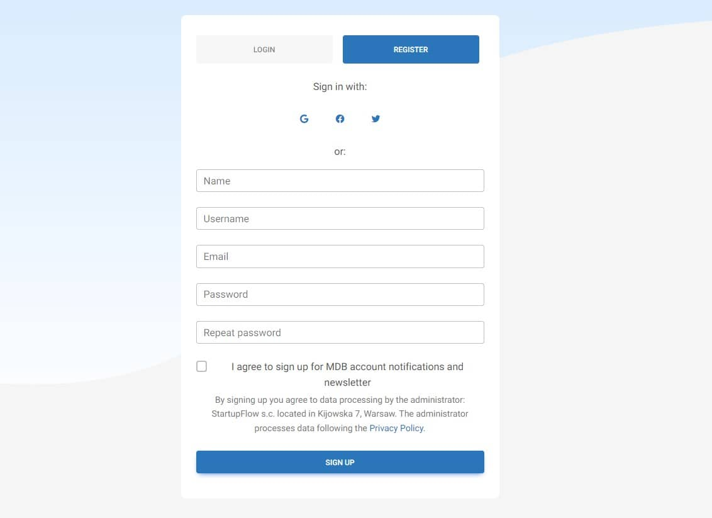
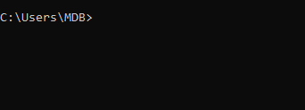
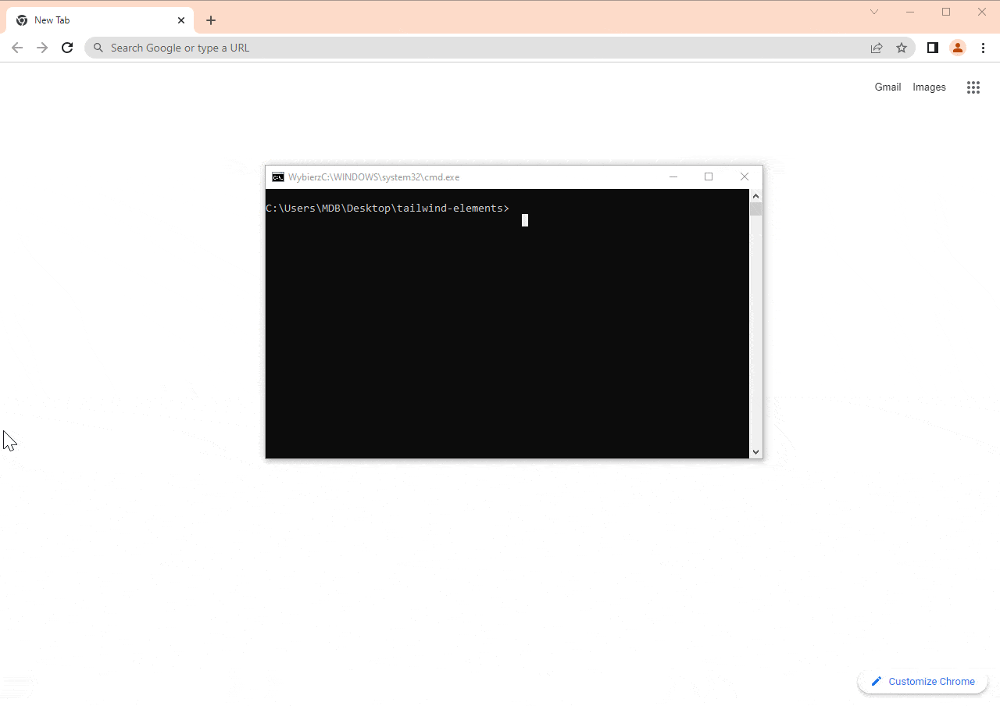

While Vite is a great tool, as you've probably noticed, it takes a bit of work to install and set up.
That is why we have created a tool that streamlines the entire process.
This tool is called MDB GO and in addition to faster and easier installation, it also allows you to publish our project on the Internet with a single command.
Let's add that these are only the basic of its many functionalities. In the future lessons we will learn, for example, how to use MDB GO to create and host databases, how to set up custom domains, create CMS or eCommerce, and many more.
But in this lesson, let's focus on 2 basic things, which are:
Let's start!
To use MDB GO you need an account. You can create it for free at this link.
It is best if you register using your email address. This will make it easier for you to use your account in the terminal afterwards.
Fill out the form, register and confirm your email address.
MDB CLI is a tool that will allow you to manage your projects and publish them to the Internet using a terminal on your computer.
Launch a terminal and enter the following command. Then confirm it by clicking enter.
Enter the mdb -v command in the terminal to check if the MDB
CLI was installed correctly. If, like in the screenshot below, you see the
version number (remember that it may differ) then everything is fine.
You won't have to do the first two steps again, they only need to be done once. From now on, you can enjoy all the facilities and possibilities that MDB GO offers you.
To log in to MDB GO, in the terminal type the mdb login command
and press enter.
Then enter your username and password that you set when registering your MDB GO account.

Navigate to the path where you want to place your project (I put it on the
desktop, so I type cd desktop) and then initialize Tailwind
Elements with the command below:
The tailwind-elements folder should appear in the location you
chose.
Type cd tailwind-elements to enter the folder of our project
and then run the following command to install all the dependencies:
It may take a while to install all of them.

Run the app by typing the following command:
After entering the above command, MDB GO should start a local server on your computer and launch a browser window with your project.
As you can see above, in my case it is the following address:
And it works out of the box! No need to set up anything to make Tailwind CSS and TW Elements work properly. Everything is ready to use. Isn't that awesome?
The file structure is a bit different here than on Vite.
index.html, as in the previous lesson, is in the root of our
project, so we can test the carousel on it again. Open this file and replace
the code between these comments:
...with the carousel code:
Then, to initialize the carousel, go to the
src/js/index.js file, remove all the code you
will find there and paste the same JavaScript code that we
used to initiate the carousel in the previous lesson:
And then our carousel should start working properly.
It's time to share our project with the world!
It is child's play thanks to MDB GO, just one command entered into the terminal.
In the terminal press ctrl + c (or
command + c on macOS) to abort the current
process. (sometimes you have to click 2 times for it to be interrupted).
Then enter the following command in the terminal to publish your project on the Internet:
After entering the above command MDB GO will ask you about the package manager. Choose the default option (npm) simply by pressing enter key. Then MDB GO will start optimizing your project and publishing it to the Internet.
After a few seconds, you will receive a link under which your project will be available. It should automatically copy itself to your clipboard, so all you have to do is paste it into your browser.
As you can see in the gif above, my project is available at the following address:
https://ascensus-tailwind-elements-free.mdbgo.io/
You just published your first TW Elements project! Great job 🚀
Remember that if something doesn't work as it should or is not clear to you, you can always hit me up on Twitter 😉
.jpg)
.jpg)
.jpg)